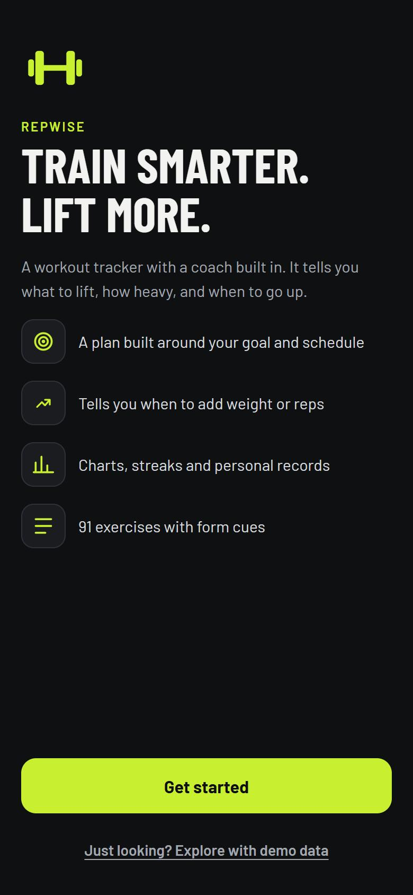
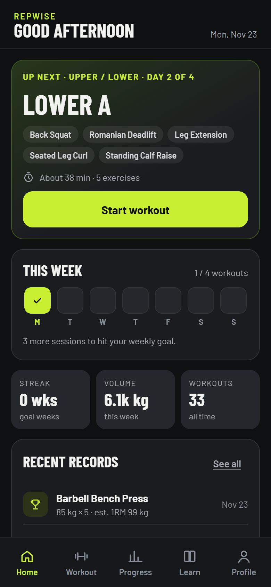
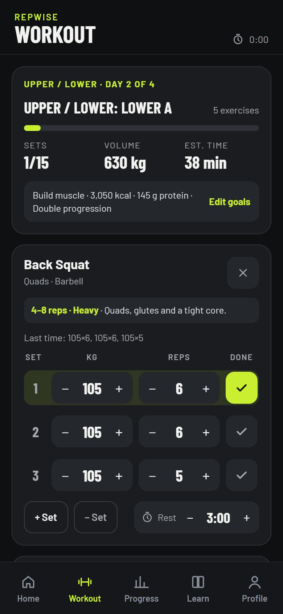
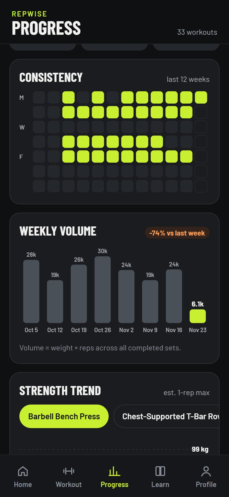

Repwise: a workout tracker that coaches you
Most trackers just record what you lifted. I wanted one that also tells me what to do next session: how heavy to go, when to add weight, and whether I'm actually getting stronger.




The problem
I've trained for years, coached 100+ members as Head Trainer of NYP Urban Strength, and competed in powerlifting. The thing that makes people progress is simple: progressive overload, lifting a little more over time. But most people forget what they lifted last week, guess their weights, and can't tell whether they're improving.
I wanted an app that remembers for you and applies the same rules a coach would. It also had to be quick to use between sets, work in a gym with bad signal, and not need an account.
What I built
- Two-step setup that picks a training split from your goal, experience and the days you can train, and queues up day 1.
- Workout logger with weight and rep steppers, an automatic rest timer (sound and vibration), and last session's numbers filled in.
- Coach tips after each exercise: when to add weight, when to add a rep, or when to move up to a harder bodyweight variation.
- Program that advances itself. Finish a day and the next one is ready, pre-filled with what you just lifted.
- Progress tab: a 12-week consistency calendar, weekly volume, a strength trend per exercise, bodyweight tracking and personal records.
- Learning content: 91 exercises with form cues, 8 training splits and an evidence-graded supplement guide.
Key decisions
No framework, one file
The whole app is plain JavaScript in a single HTML file. All app data lives in one state object, and a single render() function redraws the screen from it.
Trade-off: no build step and it loads instantly, but I had to handle things a framework would do for me, like keeping scroll position after a redraw.
Local-first, no account
Workouts are saved in the browser's local storage, and a service worker caches the app so it works offline. Users can export and import a JSON backup.
Trade-off: private and fast, but data doesn't sync between devices yet.
Coaching rules as code
I turned the "double progression" method into logic: work in a rep range, and once every set reaches the top of it, add 2.5 kg (5 kg on big leg lifts) and drop back to the bottom of the range.
Trade-off: simple and predictable, but it doesn't adjust for a bad day or a deload yet.
Hand-drawn SVG charts
Instead of a charting library, the bar chart, line charts and calendar are drawn as SVG directly from the data.
Trade-off: nothing extra to download and it works offline, but I wrote the scaling and labels myself.
Comparing different sets fairly
To spot a personal record, the app needs to compare sets like 100 kg × 5 and 105 kg × 3. Which is better? I used the Epley formula to estimate a one-rep max for every set, so any two sets can be compared on one number:
100 kg × 5 → 116.7 kg · 105 kg × 3 → 115.5 kg · so 100 × 5 is the stronger set
When you finish a workout, each exercise's best set is compared with your history. If it beats your previous best, it shows up as a new record in the workout summary. For bodyweight moves like pull-ups, where weight doesn't apply, the app compares reps instead.
Challenges
After an update, people who had installed the app on their phone kept seeing the old version, because the service worker served the cached copy.
I version the cache name and delete old caches when the new service worker activates, so each release replaces the previous one cleanly.
Weekly stats and streaks were fragile: "subtract 7 days" can land on the wrong week around daylight-saving changes, and weeks should start on Monday.
I wrote one function that finds the Monday of any week, and step back a week by asking for the Monday of a date a few days earlier, instead of subtracting fixed milliseconds.
A brand-new user, or someone watching a demo, sees empty charts, which makes the app hard to understand.
I added a demo mode that generates 10 weeks of realistic training (weights rising about 2% a week, the odd missed session) so every screen can be shown in seconds.
What I'd do next
- Accounts and cloud syncA small API and database so workouts follow you across devices.
- Automated testsUnit tests for the progression rules, PR detection and date maths.
- User feedbackPut it in front of gym members and track which features they use.
Try it yourself
Tap "Explore with demo data" on the welcome screen.